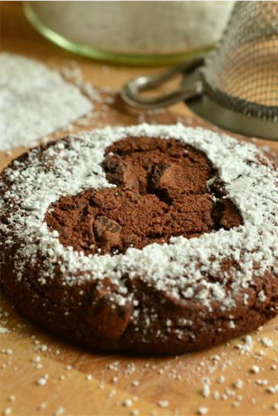

Pendant le confinement, ma sœur Pauline et moi avons passé notre
temps en cuisine pour ravir nos papilles et vaincre la lassitude
du confinement. Nous prenions tellement de plaisir à préparer nos
propres boissons et viennoiseries que nous avons décidé d’en faire
notre travail. Le SmoothCafé est un lieu accueillant et chaleureux qui vous
invite à déguster nos délicieuses viennoiseries en faisant votre
propre smoothie. Nous vous proposons une large palette de produits frais pour une
explosion de saveurs à votre goût.
Pendant le confinement, ma sœur Pauline et moi avons passé notre
temps en cuisine pour ravir nos papilles et vaincre la lassitude
du confinement. Nous prenions tellement de plaisir à préparer nos
propres boissons et viennoiseries que nous avons décidé d’en faire
notre travail. Le SmoothCafé est un lieu accueillant et chaleureux qui vous
invite à déguster nos délicieuses viennoiseries en faisant votre
propre smoothie. Nous vous proposons une large palette de produits frais pour une
explosion de saveurs à votre goût.
Menu
Evenements
